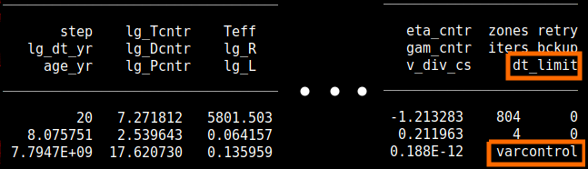

MESA Summer School 2016: Lecture 1
Table of Contents
Part 0: Overview
This guide was written as part of the 2016 MESA summer school. It is
an introduction to MESA, with a particular focus on using
run_star_extras.f. It assumes you are using r8118 of MESA.
If you're new to Fortran, we prepared a short document with some examples. Don't let yourself get hung up by the Fortran; quickly ask your classmates and the TAs for help!
There is a version of this document available with solutions. The git repository hosting this document contains the full source code used in each task, which you can see by looking at the appropriately named tag (i.e. part2-task2).
Part 1: Running and Controlling MESA
If you've used MESA before, or even just done the pre-school tutorial, much of this should be familiar.
Part 1a: Getting started
Each time you want to start a MESA project, you should make a new copy
of the star/work directory.
cp -r $MESA_DIR/star/work lecture1
In this case, we have prepared and provided a work directory for you. Download, unpack, and enter this work directory.
unzip lecture1.zip cd lecture1
Task 1: Compile and run the provided work directory
This directory evolves a solar mass star from the middle of the main sequence to hydrogen exhaustion. Confirm that you can compile and run it. A window with a few plots should appear.
Part 1b: Understanding inlists
MESA/star has three inlist sections. Each section contains the options for a different aspect of MESA.
- star_job
- options for the program that evolves the star
- controls
- options for the MESA star module
- pgstar
- options for on-screen plotting
The distinction between star_job and controls can be a little
subtle. We won't discuss pgstar in this lecture, but Frank will
later this morning.
star_job contains options that answer questions like:
- how should MESA obtain the initial model?
- are there any changes MESA should make to the initial model?
- what microphysics data should MESA read?
- where should MESA store its output?
controls contains options that answer questions like:
- when should MESA stop evolving the model?
- which angular momentum transport processes should MESA consider?
- what numerical tolerances should MESA's solvers use?
MESA's many inlist options are documented in the files
$MESA_DIR/star/defaults/star_job.defaults$MESA_DIR/star/defaults/controls.defaults$MESA_DIR/star/defaults/pgstar.defaults
They are roughly sorted into groups of related options. When you're searching for an option, see if it seems to match any of the section headings and then look there first. If that fails, try searching for some keywords.
Note that inlists can point to other inlists. This can be useful for
keeping things organized. In the lecture1 directory, inlist
points MESA to inlist_project and inlist_pgstar.
Task 2: Read the documentation
In the next part, we will use the controls varcontrol_target and
mesh_delta_coeff. Find and read the description of these controls
and make note of their default values.
Part 1c: Using inlists
An important part of working with MESA (or any numerical code) is confirming that your results are converged. Often, this is accomplished by increasing the spatial and temporal resolution of your models and empirically demonstrating that the solution does not significantly change.
You just read about two controls that affect the resolution. The
control varcontrol_target limits the amount that the structure
variables are allowed to change in a timestep. The control
mesh_delta_coeff limits the amount that variables are allowed to
change cell-to-cell. These are broad (but useful) controls. In many
cases, you will want to limit the temporal changes in a specific
quantity or to add additional zones at a specific location in the
star.
Task 3: Vary the spatial and temporal resolution
With the other members of your table, investigate the effects of
individually varying varcontrol_target and mesh_delta_coeff. To
start, we suggest varying varcontrol_target by a factor of 10 around
the default value and mesh_delta_coeff by a factor of 3 around the
default value. Make note of how many timesteps it takes to complete
the run and how many zones the model has at the end.
You may also find it interesting to watch the portion of the PGSTAR plot that displays the number of zones at each timestep and the terminal output indicating the factor that is limiting the timestep.
If you have extra time, you may want to investigate varying both controls at the same time.

Part 1d: Controlling output
MESA already knows how to output a tremendous amount of information. The two key file types are history files, which store the value of scalar quantities (e.g. mass, luminosity) at different timesteps and profile files which store the value of spatially varying quantities (e.g. density, pressure) at a single timestep.
The contents of MESA's output files is not directly controlled via inlists. The default output is set by the files
$MESA_DIR/star/defaults/history_columns.list $MESA_DIR/star/defaults/profile_columns.list
In order to customize the output, you would copy these files to your work directory.
cp $MESA_DIR/star/defaults/history_columns.list . cp $MESA_DIR/star/defaults/profile_columns.list .
Then, open up history_columns.list or profile_columns.list in a
text editor and comment/uncomment any lines to add/remove the columns
of interest ('!' is the comment character.)
You can use run_star_extras.f to define your own history and/or
profile columns. This capability is covered on the MESA website; we
will not cover it today.
Task 4: Add some output
Look at LOGS/history.data and LOGS/profile1.data to see what
information is included by default. In our later exercises, we will
be setting the variable extra_heat, which is defined at each cell in
the star. Add this quantity to the output. Run MESA and confirm that
the column you want is there (its value should be zero).
Part 2: Using Run Star Extras
To activate run_star_extras.f, navigate to the lecture1/src
directory and open run_star_extras.f in your text editor of choice.
The stock version of run_star_extras.f is quite boring. It
"includes" another file which holds the default set of routines.
include 'standard_run_star_extras.inc'
The routines defined in the included file are the ones we will want to customize. Because we want these modifications to apply only to this working copy of MESA, and not to MESA as a whole, we want to replace this include statement with the contents of the included file.
Delete the aforementioned include line and insert the contents of
$MESA_DIR/include/standard_run_star_extras.inc. (The command to
insert the contents of a file in emacs is C-x i <filename>, vim :r
<filename>, or you can just copy and paste.)
Before we make any changes, we should check that the code compiles.
cd .. ./mk
If it doesn't compile, double check that you cleanly inserted the file and removed the include line.
The two most important things that one needs to know in order to use
run_star_extras.f effectively are (1) the control flow of a MESA run
and (2) the contents of the star_info structure.
The different run_star_extras.f routines get called at different
points during MESA execution. Here is a high-level overview of a MESA
run, written in Fortran-ish pseudocode.
subroutine run1_star(...) ! star is initialized here ! before evolve loop calls: ! extras_controls ! extras_startup call before_evolve_loop(...) ! evolve one step per loop evolve_loop: do while(continue_evolve_loop) call before_step_loop(...) step_loop: do ! may need to repeat this loop if (stop_is_requested(s)) then continue_evolve_loop = .false. result = terminate exit end if result = star_evolve_step(...) if (result == keep_going) result = star_check_model(...) if (result == keep_going) result = extras_check_model(...) if (result == keep_going) result = star_pick_next_timestep(...) if (result == keep_going) exit step_loop ! redo, retry, or backup must be done inside the step_loop if (result == redo) then result = star_prepare_to_redo(...) end if if (result == retry) then result = star_prepare_to_retry(...) end if if (result == backup) then result = star_do1_backup(...) just_did_backup = .true. else just_did_backup = .false. end if if (result == terminate) then continue_evolve_loop = .false. exit step_loop end if end do step_loop ! once we get here, the only options are keep_going or terminate. ! after_step_loop calls: ! extras_finish_step call after_step_loop(...) if (result /= keep_going) then exit evolve_loop end if ! write out data ! ! do_saves calls: ! how_many_extra_history_columns ! data_for_extra_history_columns ! how_many_extra_profile_columns ! data_for_extra_profile_columns call do_saves(...) end do evolve_loop ! after_evolve_loop calls: ! extras_after_evolve call after_evolve_loop(...) end subroutine run1_star
In even more distilled terms, here is a flowchart summarizing this.

The heart of MESA is the grey "take step" box, which contains all of the machinery by which MESA evaluates and solves the equations of stellar structure.
The star_info structure contains all the information about the star
that is being evolved. By convention, the variable name s is used
throughout run_star_extras.f to refer to this structure. In
Fortran, the percent (%) operator is used to access the components of
the structure. (So you can read s% x = 3 in the same way that you
would read s.x = 3 in C.)
The star_info structure contains the stellar model itself (i.e.,
zoning information, thermodynamic profile, composition profile).
These components are listed in the file
$MESA_DIR/star/public/star_data.inc. In addition, star_info
contains the values for the parameters that you set in your controls
inlist (i.e., initial_mass, xa_central_lower_limit). Recall that
the list of controls is located in $MESA_DIR/star/defaults/controls.defaults.
There is one set of controls that will prove useful time and time
again when using run_star_extras.f and that is x_ctrl,
x_integer_ctrl, and x_logical_ctrl. These are arrays (of length
100 by default) of double precision, integer, and boolean values. You
can set the elements in your inlists
&controls x_ctrl(1) = 3.14 x_ctrl(2) = 2.78 x_integer_ctrl(1) = 42 x_logical_ctrl(1) = .true. / ! end of controls inlist
and access them later on as part of the star structure (i.e., s%
x_ctrl(1), etc.).
Part 2a: Monitoring your models
Task 0 (Example): Add a stopping condition
If you assume that the Earth is a perfect blackbody, its equilibrium temperature is given by
\begin{equation*} T_\oplus = T_\odot \left(\frac{R_\odot}{2\,\rm AU}\right)^{1/2} \end{equation*}
Suppose the stellar model we're evolving represents the Sun and I want
to stop my calculation when the Earth would reach a given temperature.
A look through controls.defaults seems to indicate that such a
condition doesn't already exist. How do I do this?
First, look at how the routines in run_star_extras.f fit into a MESA
run. To decide whether to stop, I want to check the value of the
Earth's temperature after each step. Thus, I want the subroutine that
is called after each step, which is extras_finish_step.
Now, I need to figure out how to access information about the
conditions at the stellar photosphere. I open up
star/public/star_data.inc and start looking around. If I search for
the word photosphere, I can find what I'm looking for photosphere_r
and Teff.
MESA uses cgs units unless otherwise noted. The most common non-cgs
units are solar units. MESA defines its constants in
$MESA_DIR/const/public/const_def.f. Since the run_star_extras
module includes the line use const_def, we will be able to access
these values. Using the built in constants lets us make sure we're
using exactly the same definitions as MESA. The constant with the
value of the solar radius (in cm) is named Rsun. Note the other
constants that are defined.
! returns either keep_going or terminate. ! note: cannot request retry or backup; extras_check_model can do that. integer function extras_finish_step(id, id_extra) integer, intent(in) :: id, id_extra integer :: ierr type (star_info), pointer :: s real(dp) :: Tearth ierr = 0 call star_ptr(id, s, ierr) if (ierr /= 0) return extras_finish_step = keep_going call store_extra_info(s) ! calculate blackbody temperature of earth Tearth = s% Teff * sqrt(s% photosphere_r * Rsun / (2.0 * AU)) write(*,*) "Tearth =", Tearth ! stop if it exceeds 300 K if (Tearth > 300) extras_finish_step = terminate ! to save a profile, ! s% need_to_save_profiles_now = .true. ! to update the star log, ! s% need_to_update_history_now = .true. ! see extras_check_model for information about custom termination codes ! by default, indicate where (in the code) MESA terminated if (extras_finish_step == terminate) s% termination_code = t_extras_finish_step end function extras_finish_step
Now, recompile your working directory
./mk
You will need to do this step each and every time you edit
run_star_extras.f.
Now start the model again from the beginning
./rn
This run should halt around step 19.
Task 1: Allow the user to specify a temperature
Stop when the temperature of Earth exceeds a given value. Allow the user to specify this value in the inlist. A good value to specify is 330K, as it should take your model about 100 steps to reach this value.
Edit your inlist_project and comment out the central hydrogen
abundance stopping condition that was included. We won't use it
again.
You can receive valuable MESA bonus points if your routine stops when the temperature of the Earth is within one part in a million of the specified temperature.
Part 2b: Changing input physics
MESA provides hooks to override or modify many of its built-in routines. (These routines mostly affect things that occur within "take step" box of the flowchart.) These are referred to as "other" routines. There are two main steps needed to take advantage of this functionality: (1) writing the other routine and (2) instructing MESA to use this routine.
Navigate to $MESA_DIR/star/other, where you will see a set of files
named with the pattern other_*.f. In general, find the one
corresponding to the physics (or numerics) that you want to alter.
Open it up and read through it. Many of the files contain comments
and examples.
Note that we do not want to directly edit these files. Instead we
want to copy the template routine into our copy of run_star_extras.f
and then further modify it there. The template routines are usually
named either null_other_* or default_other_*.
In this example, we will focus on other_energy.f. Open up this file.
Copy the subroutine default_other_energy and paste it into your
run_star_extras.f. It should be at the same "level" as the other
subroutines in that file (that is, contained within the
run_star_extras module.).
subroutine default_other_energy(id, ierr) use const_def, only: Rsun integer, intent(in) :: id integer, intent(out) :: ierr type (star_info), pointer :: s integer :: k ierr = 0 call star_ptr(id, s, ierr) if (ierr /= 0) return s% extra_heat(:) = s% extra_power_source return ! here is an example of calculating extra_heat for each cell. do k = 1, s% nz if (s% r(k) > 0.7*Rsun .and. s% r(k) < 0.9*Rsun) then s% extra_heat(k) = 1d3*exp(-10*(s% r(k) - 0.8*Rsun)**2) end if end do end subroutine default_other_energy
The variable s% extra_heat is an additional specific (per mass)
heating rate that will be included. Note that this routine already
does something; default_other_energy is responsible for making the
extra_power_source control work. Go ahead and remove that bit, the
existing example (kudos if you spot the error), and rename it to
lecture1_other_energy.
In Fortran, you can write expressions that operate on the whole array
at once (like s% extra_heat(:) = s% extra_power_source). However,
it is often simplest to explicitly set the value of extra_heat (or
some other array) one value at a time, by using a loop. While we're
looking code with a loop, it is a good time to mention that in MESA,
the outermost zone is at k=1 and the innermost zone is at k=s% nz.
subroutine lecture1_other_energy(id, ierr) integer, intent(in) :: id integer, intent(out) :: ierr type (star_info), pointer :: s integer :: k ierr = 0 call star_ptr(id, s, ierr) if (ierr /= 0) return end subroutine lecture1_other_energy
If you read the comments in other_energy.f (and you should), you can
see that the file tells us how to have MESA use our other_* routine.
Perform these steps (hint: you will need to edit both your
run_star_extras.f and your inlists).
Task 2: Add an extra energy source at the center of the star
Use the other_energy routine to add a heating term
where \(M_r\) is the enclosed mass. Good values are \(\Delta M = 0.05 M_\odot\) and \(L_{\mathrm{extra}} = 0.1 L_\odot\).
The lower left panel in the PGSTAR plots displays the value of s%
extra_heat, so you should be able to easily check if it looks OK.
You can receive valuable MESA bonus points if your routine allows for user-specified values of \(\Delta M\) and \(L_{\mathrm{extra}}\).
Part 2c: Analyzing your models
It is often useful to do some of your analysis in run_star_extras.
At runtime, you have access to more information about the star than
will be in the history and profile columns.
Task 3: Track the total amount of extra energy added
At the end of the run, print the total amount of energy added due to
the other_energy routine.
You can receive valuable MESA bonus points if your routine works even
if you do a restart (e.g., ./re x050).
Part 2d: Changing controls
Recall that star_info contains the values for the parameters that
you set in your controls inlist. That also means that you can set
the value of these parameters by modifying the star_info structure.
Since run_star_extras gives us hooks to access to the star_info at
each step, that means we can modify parameters as the run proceeds.
This often saves us the hassle of stopping, saving a model, editing
the inlist, and restarting.
Task 4: Turn on other_energy at central hydrogen exhaustion
Instead of having the other energy routine always on, activate it only after central hydrogen exhaustion has occurred.